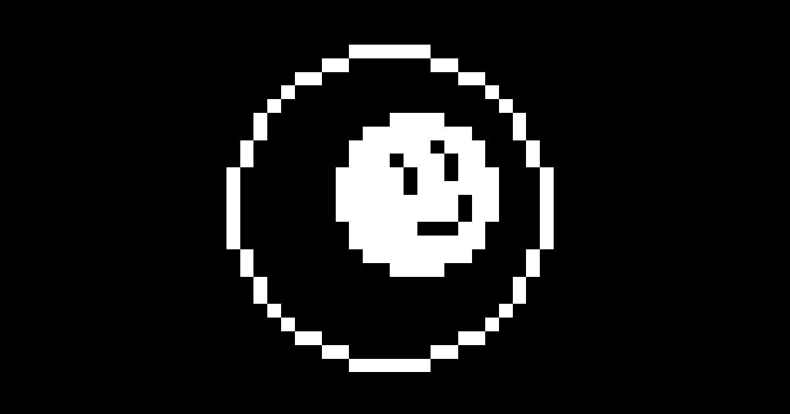

Trex Game Like est un jeu copiant le principe du jeu de Chrome quand on n'a plus de connexion.
Il a été réalisé en quelques heures de travail sur une impulsion après avoir fait
une animation de boule de billard roulant sur elle-même en pixelart.

Même si le résultat n'est pas très impressionnant. Le jeu m'a permis de me rendre compte qu'il
m'était capable de produire du contenu rapidement sur Unity et que j'etais déjà familier avec mon
environnement de logiciel (Aseprite, Unity, VS/VSCode). Le jeu ne proposait pas de difficultés techniques a
part le fait de faire en sorte qu'il ne puisse pas exister de saut impossible dans le jeu.
RÉSUMÉ DU PROJET :
OUTILS UTILISÉS
 Utilisation de Unity
Utilisation de Unity
COMPÉTENCES ACQUISES / AMÉLIORÉES
- Game design
- Niveau de programmation
- Direction artistique